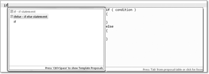
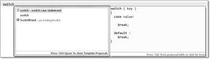

2.5 Bedingte Anweisungen oder Fallunterscheidungen
Kontrollstrukturen dienen in einer Programmiersprache dazu, Programmteile unter bestimmten Bedingungen auszuführen. Java bietet zum Ausführen verschiedener Programmteile eine if- und if-else-Anweisung sowie die switch-Anweisung. Neben der Verzweigung dienen Schleifen dazu, Programmteile mehrmals auszuführen. Bedeutend im Wort »Kontrollstrukturen« ist der Teil »Struktur«, denn die Struktur zeigt sich schon durch das bloße Hinsehen. Als es noch keine Schleifen und »hochwertigen« Kontrollstrukturen gab, sondern nur ein Wenn/Dann und einen Sprung, war die Logik des Programms nicht offensichtlich; das Resultat nannte sich Spaghetti-Code. Obwohl ein allgemeiner Sprung in Java mit goto nicht möglich ist, besitzt die Sprache dennoch eine spezielle Sprungvariante. In Schleifen erlauben continue und break definierte Sprungziele.
2.5.1 Die if-Anweisung
Die if-Anweisung besteht aus dem Schlüsselwort if, dem zwingend ein Ausdruck mit dem Typ boolean in Klammern folgt. Es folgt eine Anweisung, die oft eine Blockanweisung ist.
Mit der if-Anweisung wollen wir testen, ob der Anwender eine Zufallszahl richtig geraten hat.
Listing 2.15: WhatsYourNumber.java
public class WhatsYourNumber
{
public static void main( String[] args )
{
int number = (int) (Math.random() * 5 + 1);
System.out.println( "Welche Zahl denke ich mir zwischen 1 und 5?" );
int guess = new java.util.Scanner( System.in ).nextInt();
if ( number == guess )
System.out.println( "Super getippt!" );
System.out.println( "Starte das Programm noch einmal und rate erneut!" );
}
}
Die Abarbeitung der Ausgabe-Anweisungen hängt vom Ausdruck im if ab.
- Ist das Ergebnis des Ausdrucks wahr (number == guess wird zu true ausgewertet), wird die folgende Anweisung, also die Konsolenausgabe "Super getippt!" ausgeführt.
- Ist das Ergebnis des Ausdrucks falsch (number == guess wird zu false ausgewertet), so wird die Anweisung übersprungen, und es wird mit der ersten Anweisung nach der if-Anweisung fortgefahren.
| Programmiersprachenvergleich |
|
Im Gegensatz zu C(++) und vielen Skriptsprachen muss in Java der Testausdruck für die Bedingung der if-Anweisung ohne Ausnahme vom Typ boolean sein – für Schleifenbedingungen gilt das Gleiche. C(++) bewertet einen numerischen Ausdruck als wahr, wenn das Ergebnis des Ausdrucks ungleich 0 ist – so ist auch if (10) gültig, was in Java einem if(true) entspräche. |
if-Abfragen und Blöcke
Hinter dem if und der Bedingung erwartet der Compiler eine Anweisung. Sind mehrere Anweisungen in Abhängigkeit von der Bedingung auszuführen, ist ein Block zu setzen; andernfalls ordnet der Compiler nur die nächstfolgende Anweisung der Fallunterscheidung zu, auch wenn mehrere Anweisungen optisch abgesetzt sind.[76](In der Programmiersprache Python bestimmt die Einrückung die Zugehörigkeit.) Dies ist eine große Gefahr für Programmierer, die optisch Zusammenhänge schaffen wollen, die in Wirklichkeit nicht existieren.
Dazu ein Beispiel: Eine if-Anweisung soll testen, ob die geratene Zahl gleich der Zufallszahl war, und dann, wenn das der Fall war, eine Ausgabe liefern und die Variable number mit einer neuen Zufallszahl belegen. Zunächst die semantisch falsche Variante:
if ( number == guess )
number = (int) (Math.random() * 5 + 1);
System.out.println( "Super getippt!" );
Die Implementierung ist semantisch falsch, da unabhängig vom Test immer die Ausgabe erscheint. Der Compiler interpretiert die Anweisungen in folgendem Zusammenhang, wobei die Einrückung die tatsächliche Ausführung widerspiegelt:
if ( number == guess )
number = (int) (Math.random() * 5 + 1);
System.out.println( "Super getippt!" );
Für unsere gewünschte Logik, beide Anweisungen zusammen in Abhängigkeit von der Bedingung auszuführen, heißt es, sie in einen Block zu setzen:
if ( number == guess )
{
number = (int) (Math.random() * 5 + 1);
System.out.println( "Super getippt!" );
}
| Tipp |
|
Einrückungen ändern nicht die Semantik des Programms! Einschübe können das Verständnis nur empfindlich stören. Damit das Programm korrekt wird, müssen wir einen Block verwenden und die Anweisungen zusammensetzen. Entwickler sollten Einrückungen konsistent zur Verdeutlichung von Abhängigkeiten nutzen. |
Zusammengesetzte Bedingungen
Die bisherigen Abfragen waren sehr einfach, doch kommen in der Praxis viel komplexere Bedingungen vor. Oft im Einsatz sind die logischen Operatoren && (Und), || (Oder), ! (Nicht).
Wenn wir etwa testen wollen, ob
- eine geratene Zahl number entweder gleich der Zufallszahl guess ist oder
- eine gewisse Anzahl von Versuchen schon überschritten ist (trials größer 10),
dann schreiben wir die zusammengesetzte Bedingung so:
if ( number == guess || trials > 10 )
...
Sind die logisch verknüpften Ausdrücke komplexer, so sollten zur Unterstützung der Lesbarkeit die einzelnen Bedingungen in Klammern gesetzt werden, da nicht jeder sofort die Tabelle mit den Vorrangregeln für die Operatoren im Kopf hat.
2.5.2 Die Alternative mit einer if-else-Anweisung wählen
Neben der einseitigen Alternative existiert die zweiseitige Alternative. Das optionale Schlüsselwort else mit angehängter Anweisung veranlasst die Ausführung einer Alternative, wenn der if-Test falsch ist.
Rät der Benutzer aus unserem kleinen Spiel die Zahl nicht, wollen wir ihm die Zufallszahl präsentieren:
Listing 2.16: GuessTheNumber.java
public class GuessTheNumber
{
public static void main( String[] args )
{
int number = (int) (Math.random() * 5 + 1);
System.out.println( "Welche Zahl denke ich mir zwischen 1 und 5?" );
int guess = new java.util.Scanner( System.in ).nextInt();
if ( number == guess )
System.out.println( "Super getippt!" );
else
System.out.printf( "Tja, stimmt nicht, habe mir %s gedacht!", number );
}
}
Falls der Ausdruck number == guess wahr ist, wird die erste Anweisung ausgeführt, andernfalls die zweite Anweisung. Somit ist sichergestellt, dass in jedem Fall eine Anweisung ausgeführt wird.
Das Dangling-Else-Problem
Bei Verzweigungen mit else gibt es ein bekanntes Problem, das Dangling-Else-Problem genannt wird. Zu welcher Anweisung gehört das folgende else?
if ( Ausdruck1 )
if ( Ausdruck2 )
Anweisung1;
else
Anweisung2;
Die Einrückung suggeriert, dass das else die Alternative zur ersten if-Anweisung ist. Dies ist aber nicht richtig. Die Semantik von Java (und auch fast aller anderen Programmiersprachen) ist so definiert, dass das else zum innersten if gehört. Daher lässt sich nur der Programmiertipp geben, die if-Anweisungen zu klammern:
if ( Ausdruck1 )
{
if ( Ausdruck2 )
{
Anweisung1;
}
}
else
{
Anweisung2;
}
So kann eine Verwechslung gar nicht erst aufkommen. Wenn das else immer zum innersten if gehört und das nicht erwünscht ist, können wir, wie gerade gezeigt, mit geschweiften Klammern arbeiten oder auch eine leere Anweisung im else-Zweig hinzufügen:
if ( x >= 0 )
if ( x != 0 )
System.out.println( "x echt größer null" );
else
; // x ist gleich null
else
System.out.println( "x echt kleiner null" );


Abbildung 2.6: »if« und  + Leertaste bietet an, eine if-Anweisung mit Block anzulegen.
+ Leertaste bietet an, eine if-Anweisung mit Block anzulegen.
Das böse Semikolon
An dieser Stelle ist ein Hinweis angebracht: Ein Programmieranfänger schreibt gerne hinter die schließende Klammer der if-Anweisung ein Semikolon. Das führt zu einer ganz anderen Ausführungsfolge. Ein Beispiel:
int age = 29;
if ( age < 0 ) ; //logischer Fehler
System.out.println( "Aha, noch im Mutterleib" );
if ( age > 150 ) ; //
System.out.println( "Aha, ein neuer Moses" );
Das Semikolon führt dazu, dass die leere Anweisung in Abhängigkeit von der Bedingung ausgeführt wird und unabhängig vom Inhalt der Variablen age immer die Ausgabe »Aha, noch im Mutterleib« und »Aha, ein neuer Moses« erzeugt. Das ist sicherlich nicht beabsichtigt. Das Beispiel soll ein warnender Hinweis sein, in jeder Zeile nur eine Anweisung zu schreiben – und die leere Anweisung durch das Semikolon ist eine Anweisung.
Folgen hinter einer if-Anweisung zwei Anweisungen, die durch keine Blockanweisung zusammengefasst sind, dann wird die eine folgende else-Anweisung als Fehler bemängelt, da der zugehörige if-Zweig fehlt. Der Grund ist, dass der if-Zweig nach der ersten Anweisung ohne else zu Ende ist:
int age = 29;
if ( age < 0 )
;
System.out.println( "Aha, noch im Mutterleib" );
else if ( age > 150 ) ; //
System.out.println( "Aha, ein neuer Moses" );
Mehrfachverzweigung beziehungsweise geschachtelte Alternativen
if-Anweisungen zur Programmführung kommen sehr häufig in Programmen vor, und noch häufiger werden sie genutzt, um eine Variable auf einen bestimmten Wert zu prüfen. Dazu werden if- und if-else-Anweisungen gerne verschachtelt (kaskadiert). Wenn eine Variable einem Wert entspricht, dann wird eine Anweisung ausgeführt, sonst wird die Variable mit einem anderen Wert getestet und so weiter.
| Beispiel |
|
Kaskadierte if-Anweisungen sollen uns helfen, die Variable days passend nach dem Monat (vorbelegte Variable month) und der Information, ob das Jahr ein Schaltjahr ist (vorbelegte boolean-Variable isLeapYear), zu belegen: if ( month == 4 ) |
Die eingerückten Verzweigungen nennen sich auch angehäufte if-Anweisungen oder if-Kaskade, da jede else-Anweisung ihrerseits weitere if-Anweisungen enthält, bis alle Abfragen gemacht sind.
Angewendet auf unser Zahlenratespiel, wollen wir dem Benutzer einen Tipp geben, ob seine eingegebene Zahl kleiner oder größer als die zu ratende Zahl war.
Listing 2.17: GuessTheNumber2.java
public class GuessTheNumber2
{
public static void main( String[] args )
{
int number = (int) (Math.random() * 5 + 1);
System.out.println( "Welche Zahl denke ich mir zwischen 1 und 5?" );
int guess = new java.util.Scanner( System.in ).nextInt();
if ( number == guess )
System.out.println( "Super getippt!" );
else if ( number > guess )
System.out.println( "Nee, meine Zahl ist größer als deine!" );
else if ( number < guess )
System.out.println( "Nee, meine Zahl ist kleiner als deine!" );
}
}
2.5.3 Der Bedingungsoperator
In Java gibt es ebenso wie in C(++) einen Operator, der drei Operanden benutzt. Dies ist der Bedingungsoperator, der auch Konditionaloperator, ternärer Operator beziehungsweise trinärer Operator genannt wird. Er erlaubt es, den Wert eines Ausdrucks von einer Bedingung abhängig zu machen, ohne dass dazu eine if-Anweisung verwendet werden muss. Die Operanden sind durch ? beziehungsweise : voneinander getrennt.
| Beispiel |
|
Die Bestimmung des Maximums ist eine schöne Anwendung des trinären Operators: max = ( a > b ) ? a : b; |
|
if ( a > b ) |
Drei Ausdrücke kommen im Bedingungsoperator vor, daher heißt der Operator auch ternärer/trinärer Operator, vom lateinischen ternarius (»aus drei bestehend«). Der erste Ausdruck – in unserem Fall der Vergleich a > b – muss vom Typ boolean sein. Ist die Bedingung erfüllt, dann erhält die Variable den Wert des zweiten Ausdrucks, andernfalls wird der Variablen max der Wert des dritten Ausdrucks zugewiesen. Der Bedingungsoperator kann eingesetzt werden, wenn der zweite und dritte Operand ein numerischer Typ, boolescher Typ oder Referenztyp ist. Der Aufruf von Methoden, die demnach void zurückgeben, ist nicht gestattet.
Mit dem Rückgabewert können wir alles Mögliche machen, etwa ihn direkt ausgeben:
System.out.println( ( a > b ) ? a : b );
Das wäre mit if-else nur mit temporären Variablen möglich oder eben mit zwei println()-Anweisungen.
Beispiele
Der Bedingungsoperator findet sich häufig in kleinen Methoden:
- Das Maximum oder Minimum zweier Zahlen liefern die Ausdrücke a > b ? a : b beziehungsweise a < b ? a : b.
- Den Absolutwert einer Zahl liefert x >= 0 ? x : -x.
- Ein Ausdruck soll eine Zahl n, die zwischen 0 und 15 liegt, in eine Hexadezimalzahl konvertieren: (char)((n < 10) ? ('0' + n) : ('a' – 10 + n )).
Geschachtelte Anwendung vom Bedingungsoperator *
Die Anwendung des trinären Operators führt schnell zu schlecht lesbaren Programmen, und er sollte daher vorsichtig eingesetzt werden. In C(++) führt die unbeabsichtigte Mehrfachauswertung in Makros zu schwer auffindbaren Fehlern. Gut, dass uns das in Java nicht passieren kann! Durch ausreichende Klammerung muss sichergestellt werden, dass die Ausdrücke auch in der beabsichtigten Reihenfolge ausgewertet werden. Im Gegensatz zu den meisten Operatoren ist der Bedingungsoperator rechtsassoziativ (die Zuweisung ist ebenfalls rechtsassoziativ).
Der Ausdruck
b1 ? a1 : b2 ? a2 : a3
ist demnach gleichbedeutend mit:
b1 ? a1 : ( b2 ? a2 : a3 )
| Beispiel |
|
Wollen wir eine Methode schreiben, die für eine Zahl n abhängig vom Vorzeichen –1, 0 oder 1 liefert, lösen wir das Problem mit einem geschachtelten trinären Operator: public static int sign( int n ) |
Der Bedingungsoperator ist kein lvalue *
Der trinäre Operator liefert als Ergebnis einen Ausdruck zurück, der auf der rechten Seite einer Zuweisung verwendet werden kann. Da er rechts vorkommt, nennt er sich auch rvalue. Er lässt sich nicht derart auf der linken Seite einer Zuweisung einsetzen, dass er eine Variable auswählt, der ein Wert zugewiesen wird.[77](In C(++) kann dies durch *((Bedingung) ? &a : &b) = Ausdruck; über Pointer gelöst werden.)
| Beispiel |
|
Die folgende Anwendung des trinären Operators ist in Java nicht möglich: ((direction >= 0) ? up : down) = true; // |
2.5.4 Die switch-Anweisung bietet die Alternative
Eine Kurzform für speziell gebaute, angehäufte if-Anweisungen bietet switch. Im switch-Block gibt es eine Reihe von unterschiedlichen Sprungzielen, die mit case markiert sind. Die switch-Anweisung erlaubt die Auswahl von:
- Ganzzahlen
- Wrappper-Typen (mehr dazu in Kapitel 8)
- Aufzählungen (enum)
- Strings (seit Java 7)
| Interna |
|
Im Bytecode gibt es nur eine switch-Variante für Ganzzahlen. Bei Strings, Aufzählungen und Wrapper-Objekten wendet der Compiler Tricks an, um diese auf Ganzzahl-switch-Konstruktionen zu reduzieren. |
switch bei Ganzzahlen (und somit auch chars)
Ein einfacher Taschenrechner für vier binäre Operatoren ist mit switch schnell implementiert (und wir nutzen die Methode charAt(0), um von der String-Eingabe auf das erste Zeichen zuzugreifen, um ein char zu bekommen):
Listing 2.18: Calculator.java
public class Calculator
{
public static void main( String[] args )
{
double x = new java.util.Scanner( System.in ).nextDouble();
char operator = new java.util.Scanner( System.in ).nextLine().charAt( 0 );
double y = new java.util.Scanner( System.in ).nextDouble();
switch ( operator )
{
case '+':
System.out.println( x + y );
break;
case '-':
System.out.println( x – y );
break;
case '*':
System.out.println( x * y );
break;
case '/':
System.out.println( x / y );
break;
}
}
}
Die Laufzeitumgebung sucht eine bei case genannte Sprungmarke (auch Sprungziel genannt) – eine Konstante –, die mit dem in switch angegebenen Ausdruck übereinstimmt. Gibt es einen Treffer, so werden alle auf dem case folgenden Anweisungen ausgeführt, bis ein (optionales) break die Abarbeitung beendet. (Ohne break geht die Ausführung im nächsten case-Block automatisch weiter; mehr zu diesem »It’s not a bug, it’s a feature!« folgt später). Stimmt keine Konstante eines case-Blocks mit dem switch-Ausdruck überein, werden erst einmal keine Anweisungen im switch-Block ausgeführt. Die case-Konstanten müssen unterschiedlich sein, andernfalls gibt es einen Compilerfehler.
Die switch-Anweisung hat einige Einschränkungen:
- Die JVM kann switch nur auf Ausdrücken vom Datentyp int ausführen. Elemente vom Datentyp byte, char und short sind somit erlaubt, da der Compiler den Typ automatisch auf int anpasst. Ebenso sind die Aufzählungen und die Wrapper-Objekte Character, Byte, Short, Integer möglich, da Java automatisch die Werte entnimmt – mehr dazu folgt in Abschnitt 8.2, »Wrapper-Klassen und Autoboxing«. Es können nicht die Datentypen boolean, long, float und double benutzt werden. Zwar sind auch Aufzählungen und Strings als switch-Ausdruckstypen möglich, doch intern werden sie auf Ganzzahlen abgebildet. Allgemeine Objekte sind sonst nicht erlaubt.
- Die bei switch genannten Werte müssen konstant sein. Dynamische Ausdrücke, etwa Rückgaben aus Methodenaufrufen, sind nicht möglich.
- Es sind keine Bereichsangaben möglich. Das wäre etwa bei Altersangaben nützlich, um zum Beispiel die Bereiche 0–18, 19–60, 60–99 zu definieren. Als Lösung bleiben nur angehäufte if-Anweisungen.
| Hinweis |
|
Die Angabe bei case muss konstant sein, aber kann durchaus aus einer Konstanten (finalen Variablen) kommen: final char PLUS = '+'; |
Alles andere mit default abdecken
Soll ein Programmteil in genau dem Fall abgearbeitet werden, in dem es keine Übereinstimmung mit irgendeiner case-Konstanten gibt, so lässt sich die besondere Sprungmarke default einsetzen. Soll zum Beispiel im Fall eines unbekannten Operators das Programm eine Fehlermeldung ausgeben, so schreiben wir:
switch ( operator )
{
case '+':
System.out.println( x + y );
break;
case '-':
System.out.println( x – y );
break;
case '*':
System.out.println( x * y );
break;
case '/':
System.out.println( x / y );
break;
default:
System.err.println( "Unbekannter Operator " + operator );
}
Der Nutzen von default ist der, falsch eingegebene Operatoren zu erkennen, denn die Anweisungen hinter default werden immer dann ausgeführt, wenn keine case-Konstante gleich dem switch-Ausdruck war. default kann auch zwischen den case-Blöcken auftauchen, doch das ist wenig übersichtlich und nicht für allgemeine Anwendungen zu empfehlen. Somit würde der default-Programmteil auch dann abgearbeitet, wenn ein dem default vorangehender case-Teil kein break hat. Nur ein default ist erlaubt.
switch hat Durchfall
Bisher haben wir in die letzte Zeile eine break-Anweisung gesetzt. Ohne ein break würden nach einer Übereinstimmung alle nachfolgenden Anweisungen ausgeführt. Sie laufen somit in einen neuen Abschnitt herein, bis ein break oder das Ende von switch erreicht ist. Da dies vergleichbar mit einem Spielzeug ist, bei dem Kugeln von oben nach unten durchfallen, nennt sich dieses auch Fall-Through. Ein häufiger Programmierfehler ist, das break zu vergessen, und daher sollte ein beabsichtigter Fall-Through immer als Kommentar angegeben werden.
Über dieses Durchfallen ist es möglich, bei unterschiedlichen Werten immer die gleiche Anweisung ausführen zu lassen. Das nutzt auch das nächste Beispiel, was über eine Zeichenkette läuft (mit einer Schleife und einem Konstrukt, das wir bisher noch nicht kennengelernt haben, aber damit ist das Beispiel etwas saftiger) und für jeden Buchstaben ausgibt, ob er Vokal ist oder nicht:
Listing 2.19: VowelTest.java
public class VowelTest
{
public static void main( String[] args )
{
for ( char charToTestIfVowel : "Come at me, @TheKevinButler".toCharArray() )
{
switch ( charToTestIfVowel )
{
case 'a': case 'A': // Fällt durch
case 'e': case 'E':
case 'i': case 'I':
case 'o': case 'O':
case 'u': case 'U':
System.out.println( charToTestIfVowel + " ist Vokal" );
break;
default:
System.out.println( charToTestIfVowel + " ist kein Vokal" );
}
}
}
}
In dem Beispiel bestimmt eine case-Anweisung, ob die Variable charToTestIfVowel einen Vokal enthält. Fünf case-Anweisungen decken jeweils einen Buchstaben (Vokal) ab. Stimmt der Inhalt von charToTestIfVowel mit einer der Vokal-Konstanten überein, so »fällt« das Programm in den Zweig mit der Ausgabe, dass charToTestIfVowel ein Vokal ist. Dieses Durchfallen über die case-Zweige ist sehr praktisch, da der Programmcode für die Ausgabe so nicht dupliziert werden muss. Tritt auf der anderen Seite keine Bedingung im switch-Teil ein, so gibt die Anweisung im default-Teil aus, dass charToTestIfVowel kein Vokal ist. Stehen mehrere case-Blöcke untereinander, um damit Bereiche abzubilden, nennt sich das auch Stack-Case-Labels.

Abbildung 2.7: »switch« und + Leertaste bietet an, ein Grundgerüst für eine switch-Fallunterscheidung anzulegen.
| Hinweis |
|
Obwohl ein fehlendes break zu lästigen Programmierfehlern führt, haben die Java-Entwickler dieses Verhalten vom syntaktischen Vorgänger C übernommen. Eine interessante Lösung wäre gewesen, das Verhalten genau umzudrehen und das Durchfallen explizit einzufordern, zum Beispiel mit einem Schlüsselwort. Dazu gibt es eine interessante Entwicklung. Java »erbt« diese Eigenschaft von C(++), die wiederum erbt es von der Programmiersprache B. Einer der »Erfinder« von B ist Ken Thompson, der heute bei Google arbeitet und an der neuen Programmiersprache Go beteiligt ist. In Go müssen Entwickler ausdrücklich die fallthrough-Anweisung verwenden, wenn ein case-Block zum nächsten weiterleiten soll. |
switch auf Strings
Seit Java 7 sind switch-Anweisungen auf String-Objekten möglich.
Listing 2.20: SweetsLover.java, main()
String input = javax.swing.JOptionPane.showInputDialog( "Eingabe" );
switch ( input.toLowerCase() )
{
case "kekse":
System.out.println( "Ich mag Keeeekse" );
break;
case "kuchen":
System.out.println( "Ich mag Kuchen" );
break;
case "scholokade":
case "lakritze":
System.out.println( "Hm. lecker" );
break;
default:
System.out.printf( "Kann man %s essen?", input );
}
Obwohl Zeichenkettenvergleiche nun möglich sind, fallen Überprüfungen auf reguläre Ausdrücke leider heraus, die insbesondere Skriptsprachen anbieten.
Wie auch beim switch mit Ganzzahlen können die Zeichenketten beim String-case-Zweig aus finalen (also nicht änderbaren) Variablen stammen. Ist etwa String KEKSE = "kekse"; vordefiniert, ist case KEKSE: erlaubt.
Ihr Kommentar
Wie hat Ihnen das <openbook> gefallen? Wir freuen uns immer über Ihre freundlichen und kritischen Rückmeldungen.
 Jetzt bestellen
Jetzt bestellen


{kind=link}
{kind=link}